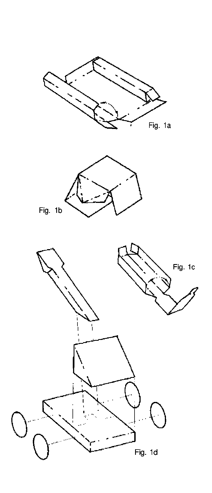
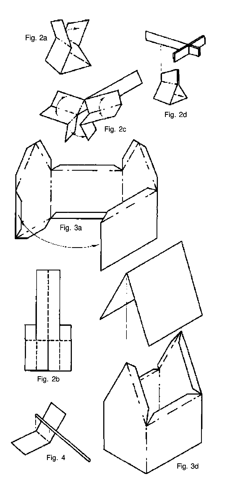
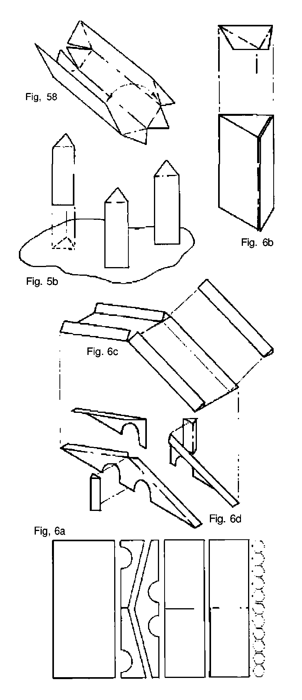
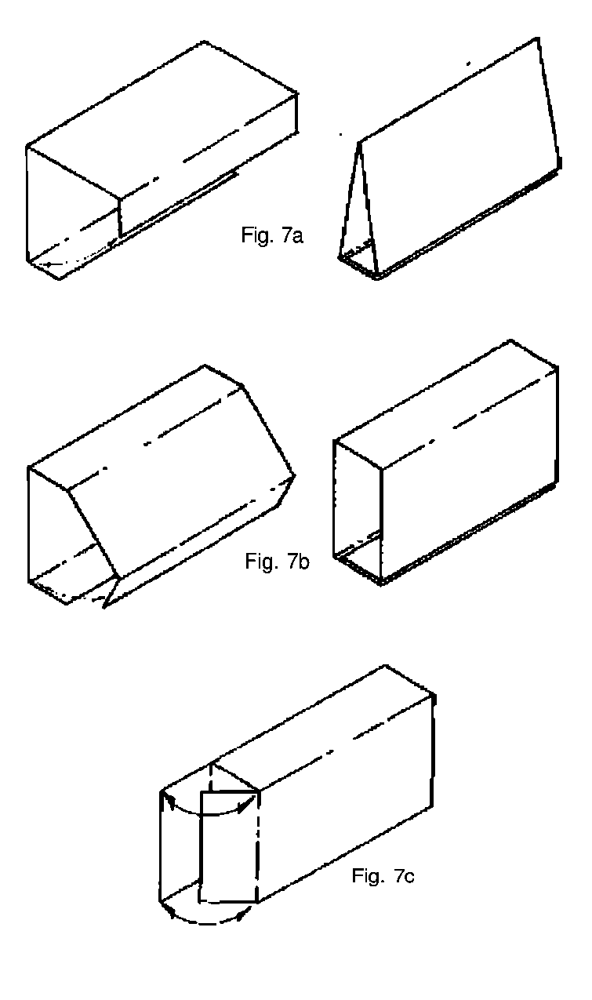
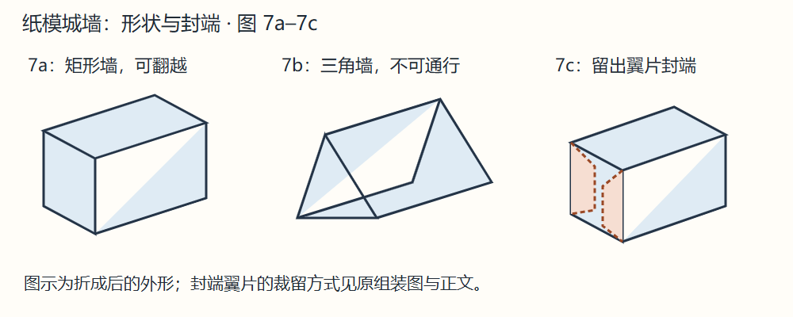

立体折叠纸模组装 How to Assemble the BATTLESYSTEM 3-D Adventure Fold-Up Figures
耐心检查每步，纸模不难。需要工作台、剪刀或美工刀、胶、直尺。沿直尺折叠可得整齐折痕。上胶前先试拼；出错尚能修正，胶后就可能报废。胶少量使用。
原盒有八张纸模：投石机／弩炮／小屋一张，树干／旗帜／另一投石机上架一张，树冠两张，桥一张，墙三张。本扫描没有收齐这些独立模切纸张，以下说明按册内原文译入。
投石机 Catapult
两架，各有上架、底座、投臂、四轮。第二件上架在树干纸张。沿外侧粗实线剪下。
按图 1a，把底座各虚线向无图面内折；长窄部分折成长盒，标 Catapult Base 的面朝底座无图背面。两个 X 折翼封盒两端，带绞盘与不带绞盘的装饰端片分别封前后。粘好底座面与端片，晾干。
按图 1b，上架各虚线内折，形成直角三角，Catapult Top 字样在外。小空白三角及 X 方块涂少量胶，压合晾干。
按图 1c，投臂各虚线内折，形成细长管；一端有两个 X 翼，另一端有异形延长片。长 X 边粘到对应背面成管，小翼相粘成角；延长片根部 X 舌上胶，插入管端。投臂朝上的圆圈是放弹丸处。
按图 1d 总装：上架标字面粘底座对应 X，斜边朝绞盘；投臂小端粘在上架前方底座小方块，投臂斜向上、弹丸圆圈向上；最后粘四轮，各轮露出底座上下的部分应相同。
弩炮 Ballista
两架，各有底座与弩臂。沿粗实线剪。底座中央最近两条虚线内折，外侧两条外折，两端空白舌不折；压成顶端带舌的三角形，粘双层舌，晾干，见图 2a。
弩臂沿 A–B、C–D 剪，不能剪过虚线，见图 2b。整体纵折，前段沿 C–C 反折，使装饰面对装饰面。剪开的两半沿虚线折起，带箭头小舌朝前，放开有弓形图案部分，应呈弩形，见图 2c。
按图 2d，粘合弓两半与箭头；细长部分尚未粘死前，给底座空白舌上胶，插入，使弩向上倾，再粘其余细长部分。
小屋 Hut
由屋身与屋顶两件组成。粗线剪下，屋身各虚线折；可把门和三面窗沿边剪开、折回成开启状。右侧最远处，即装饰面看门右边的舌，与对面墙内侧相粘，见图 3a。
屋顶沿中央虚线内折；屋身顶部舌少量上胶，轻压屋顶，见图 3d。
旗帜 Flag
两面旗可装附赠旗手旗杆，或牙签、细木金属杆。沿粗线剪，中央虚线内折，杆置中间，粘合两半，见图 4。
树与树干 Trees and Tree Trunks
附十树干与两张树冠。树冠剪成不规则、曲线轮廓的树丛；没有固定正确尺寸，小块比大块通用，但每块至少容两个树干，否则易倒。每“树”实际代表俯视的一丛树林。
树干剪下，各虚线向内折，三角端片重叠；长空白 X 边藏入另一侧装饰边下，形成三角柱，见图 5a。粘长边，再粘三角端片，哪片在上无妨。每树冠无图背面粘两三根树干，见图 5b。
桥梁 Bridge
剪前先看图 6a，辨清部件。十五个内有三角的六边形是端盖；其上两条看似矩形的长件为护栏，沿粗线分半，不沿纵向四细线剪。再上是两件有拱的桥支架，一件完整，一件分两半；最上矩形是桥面，中央及边缘有细折线。
桥面只沿中央细线内折，边缘细线不折。完整支架沿会聚 V 缺口的细线内折，折翼上胶，桥面贴其顶部；另一支架两半同法粘在桥面另一侧。
四条护栏像树干折三角柱，但无顶部三角片。端盖六边形各边内折，只露中间三角，折边上胶插入护栏端，见图 6b。护栏粘桥面，见图 6c。
另从墙纸剪两块各一乘二格，沿粗线、不沿细线剪；像护栏折并封端，再固定桥两侧，见图 6d。
墙 Walls
三角截面适合不可通行墙，矩形截面适合可翻越墙，见图 7a、7b。
三角墙须裁四格宽，长度任意至纸张极限；像护栏折，有剩端盖可封口。
成品高、宽各一格的方墙，展开须五格宽。高或宽每多一格，展开多两格。长度任选。像投石机底座或投臂折；要封端，在五个面中的两个面末端留额外一格，向内折，见图 7c。
墙段可作很多变化。可先用复印件试造型，但普通复印纸成品不耐游戏中的搬动。
原组装示意图 Assembly Figures
图中 1a–1d 为投石机；2a–2d 为弩炮；3 为小屋；4 为旗帜；5 为树木；6 为桥；7 为城墙。X 表示胶合翼，虚线表示折线。




